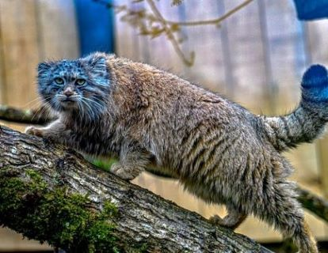
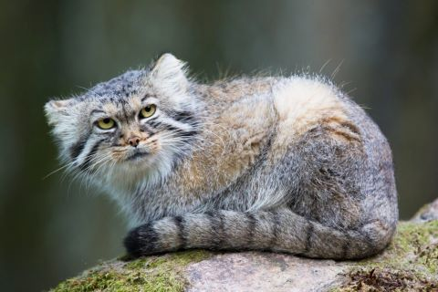
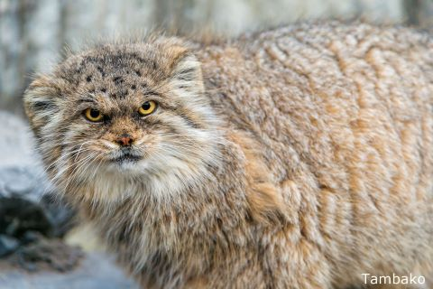
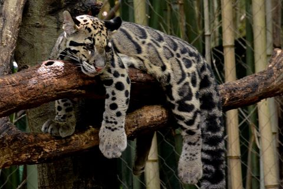
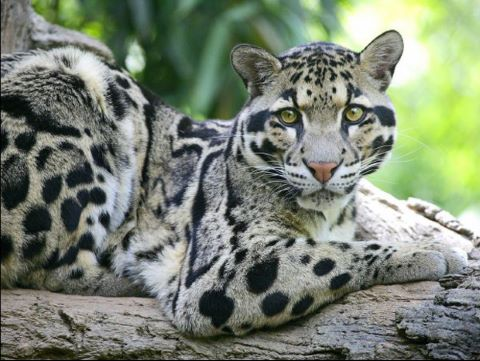
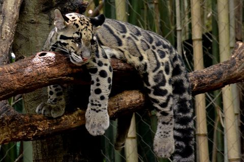
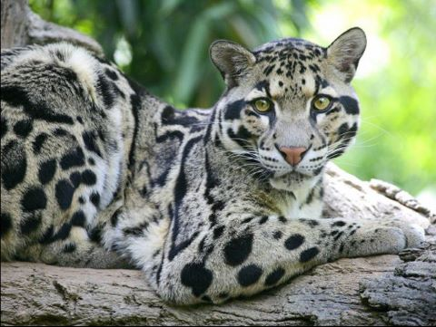
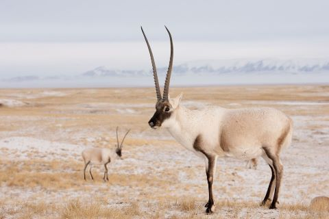
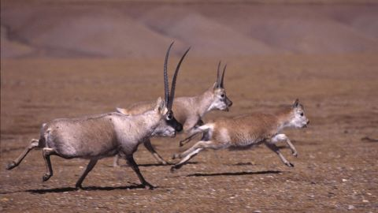
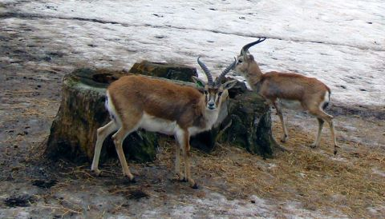

Les Animaux du Tibet
Découvrez la faune impressionnate et à la fois diverse du Tibet. Des bêtes qui peuvent être aussi dangereuse que magnifique.
-
Le Chat de Pallas
le chat de Pallas a un corps compact et trapu avec des pattes courtes et une queue courte et épaisse1. La fourrure, très longue et épaisse, le fait paraître plus gros qu'il n'est. Le poil présent dans les parties inférieures (ventre, intérieur des pattes et de la queue) est presque deux fois plus long que celui qui est situé sur les flancs ou le dos, ce qui lui permet de marcher ventre à terre quand il chasse tout en étant protégé des températures hivernales. Le Manul s'enroule dans sa queue pour se coucher, celle-ci lui permettant de garder sa chaleur corporelle. La fourrure est de couleur grise au nord de son aire de répartition à fauve à roux pour le sud. La couleur peut varier saisonnièrement. Certains individus ont des rayures sombres verticales sur les flancs. L'extrémité des poils est blanche, ce qui lui donne une apparence argentée. Le menton, la poitrine et le ventre sont blancs. Les pattes sont marquées de bandes noires indistinctes. La queue est annelée de sept à neuf marques noires étroites4et son extrémité est noire. La couleur de la robe permet un excellent camouflage dans son environnement naturel.
   -
La panthère nébuleuse
La Panthère nébuleuse (Neofelis nebulosa) ou Léopard nébuleux est une espèce de félins de taille moyenne, avec des pattes courtes et une très longue queue. Le pelage est fauve distinctement marqué de larges taches rectangulaires aux rebords sombres évoquant des nuages, ce qui est à l'origine de son nom. Il s'agit du félin actuel qui a les canines les plus longues proportionnellement à sa taille. La Panthère nébuleuse est difficile à observer dans la nature en raison de son caractère discret. Elle est réputée pour ses talents arboricoles, cependant elle se déplace essentiellement au sol, et utilise les arbres pour se mettre à l'abri des prédateurs comme le tigre et le léopard. Territoriale et solitaire, elle chasse des proies tant nocturnes que diurnes, dont la taille varie de celle de l'écureuil des palmiers (Menetes berdmorei) au Cerf cochon (Axis porcinus). L'aire de répartition s'étend dans toute l'Asie du Sud-Est du Népal jusqu'à la Chine. Son habitat de prédilection est la forêt primaire tropicale humide, bien qu'elle puisse s'accommoder d'autres biotopes. La Panthère nébuleuse est placée en annexe I de la CITES et est protégée par les législations nationales de la quasi-totalité des pays où elle vit. Toutefois, la déforestation et le braconnage sont des menaces sérieuses pour l'avenir de l'espèce, et l'Union internationale pour la conservation de la nature estime que ce félin est « vulnérable ». Par ailleurs, c'est un félin rare dans les espaces zoologiques, la formation de couples reproducteurs est difficile et rend l'élevage conservatoire délicat.
 



-
Antilope du Tibet
Antilope du Tibet, également appelé chiru , est un mammifère herbivore emblématique des hauts plateaux tibétains, évoluant à des altitudes comprises entre 3 700 et 5 500 mètres . Adaptée aux conditions extrêmes de cette région, elle possède un pelage dense de couleur brun clair sur le dos et blanc sur le ventre, lui offrant une excellente isolation contre le froid. Les mâles, plus grands que les femelles, arborent de longues cornes fines et recourbées pouvant atteindre 60 cm , tandis que les femelles en sont dépourvues. Solitaires ou en petits troupeaux, ces antilopes se nourrissent principalement de graminées et de mousses, parcourant de vastes territoires en quête de pâturages. Menacées par la chasse illégale pour leur laine ultra-fine, le shahtoosh , prisée pour la confection d'écharpes de luxe, ainsi que par la dégradation de leur habitat, elles sont aujourd'hui protégées et figurent sur la liste des espèces quasi-menacées selon l'UICN.
  